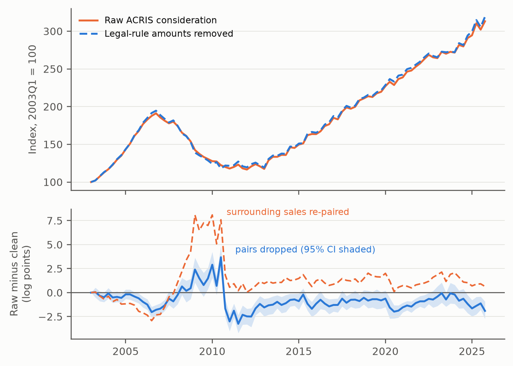

The question
When a lender takes title through foreclosure or a deed in lieu, New York transfer-tax rules can base the recorded consideration on a bid, judgment or discharged debt rather than a negotiated price. Should that amount enter a house-price index as if it were a sale price?
The paper classifies such deeds by their parties across every deed recorded in Manhattan, the Bronx, Brooklyn and Queens from 2003 to 2025, and measures what they do to a standard repeat-sales index.
Key results
- 16,655deeds labelled as legal-rule transfers among 1.47 million, 2003–2025
- 70%of their amounts carry cents, against 6% of ordinary sales; yet conventional screens keep them
- 94–95%of those recorded in 2016–25 appear in the city's public sales file at the recorded amount
- 0.6log points: difference in the peak-to-trough decline (interval −3.0 to +1.2). The path, not the total, changes

Why it matters
- Repeat-sales indices, hedonic models and local price series built from public deed records inherit these amounts unless deeds are classified by their parties: the document type does not distinguish them.
- The distortion is to timing: the raw index falls less into 2009–10 and more into 2011–12, which matters for short-window returns and borough comparisons.
- Dropping contaminated pairs and bridging across them answer different questions; the choice moves the crisis decline by about five log points and should be made explicitly.
- The classifier is released as a free, dependency-light Python module.
Validation status
A stratified probability sample of 400 deeds still needs two independent, blinded human readings to estimate the classifier's weighted precision and recall with uncertainty. The index comparison is conditional on the current classifier; if the review changes a rule, the classifier and affected indices will be rerun, and a changed rule will need fresh validation before any new error-rate claim.
How to cite
@misc{loschi2026deed,
author = {Loschi, Pablo},
title = {When a Deed Is Not a Market Sale: Foreclosure Transfers,
Statutory Consideration, and Repeat-Sales House-Price
Measurement},
year = {2026},
howpublished = {Working paper and replication package, Zenodo},
doi = {10.5281/zenodo.22925383}
}